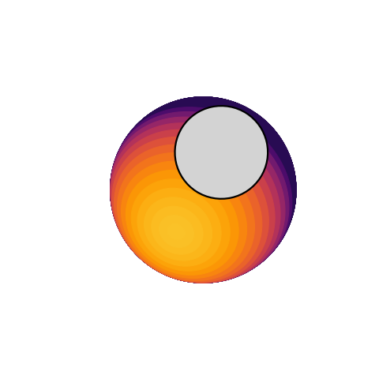
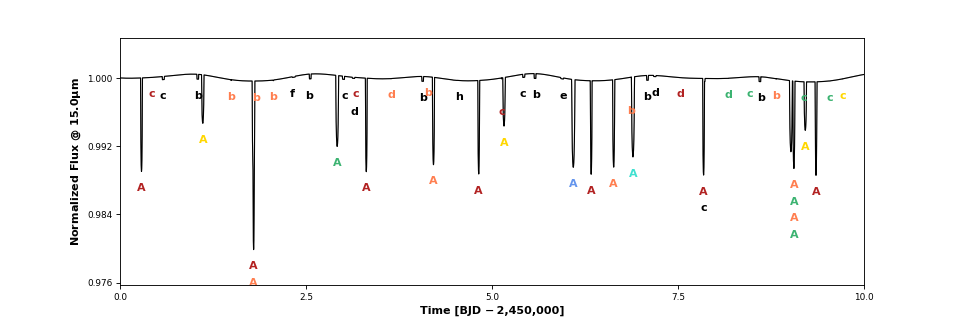
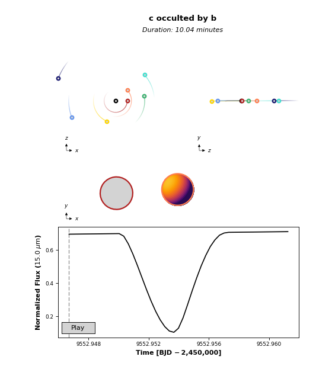
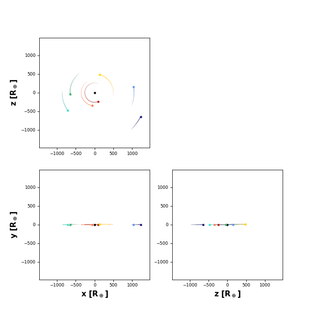

ppo.py ¶
The main Python interface to the C photodynamics code. Allows users to compute and plot planet-planet occultation light curves, as well as transits, secondary eclipses, phase curves, mutual transits, planet-moon events, and more.
-
class
planetplanet.photo.ppo.System(*bodies, **kwargs)¶ The planetary system class. This is the main interface to the photodynamical core. Instantiate with all bodies in the system and the desired settings, passed as
kwargs.Parameters: - bodies – Any number of
Planet(),Moon(), orStar()instances comprising all the bodies in the system. The first body is assumed to be the primary. - nbody (bool) – Uses the
REBOUNDN-body code to compute orbits. DefaultTrue - keptol (float) – Kepler solver tolerance. Default 1.e-15
- maxkepiter (int) – Maximum number of Kepler solver iterations. Default 100
- kepsolver (str) – Kepler solver (newton | mdfast). Default newton
- timestep (float) – Timestep in days for the N-body solver. Default 0.01
- adaptive (bool) – Adaptive grid for limb-darkened bodies? Default
True - quiet (bool) – Suppress output? Default
False - mintheta (float) – Absolute value of the minimum phase angle in degrees. Below this angle, elliptical boundaries of constant surface brightness on the planet surface are treated as vertical lines. Default 1.
- maxvertices (int) – Maximum number of vertices allowed in the area computation. Default 999
- maxfunctions (int) – Maximum number of functions allowed in the area computation. Default 999
- oversample (int) – Oversampling factor for each exposure. Default 1
- distance (float) – Distance to the system in parsecs. Default 10.
- circleopt (bool) – Solve the simpler quadratic problem for circle-ellipse intersections when the axes of the ellipse are equal to within \(10^{-10}\)? Default
True - batmanopt (bool) – Use the
batmanalgorithm to compute light curves of radially symmetric bodies? This can significantly speed up the code. DefaultTrue - integrator (str) – The N-body integrator (
whfast|ias15) to use. Defaultias15
-
compute(time, lambda1=5, lambda2=15, R=100)¶ Compute the full system light curve over a given time array between wavelengths lambda1 and lambda2 at resolution R. This method runs the photodynamical core, populates all bodies with their individual light curves, and flags all occultation events.
Parameters: - time (array_like) – The times at which to evaluate the light curve (BJD − 2,450,000)
- lambda1 (float) – The start point of the wavelength grid in microns. Default 5
- lambda2 (float) – The end point of the wavelength grid in microns. Default 15
- R (float) – The spectrum resolution, \(R = \frac{\lambda}{\Delta\lambda}\). Default 100
-
compute_orbits(time)¶ Run the dynamical code to compute the positions of all bodies over a given time array. This method does not compute light curves, but it does check for occultations.
Parameters: time (array_like) – The times at which to store the body positions (BJD − 2,450,000)
-
continuum¶ The total continuum flux of the system computed on a grid of time and wavelength. This is the same as
flux, but without any occultations/transits.
-
flux¶ The total flux of the system computed on a grid of time and wavelength.
-
flux_hr¶ The total flux of the system computed on a grid of high resolution time and wavelength.
-
next_occultation(occulted, occultors=None, tstart=7670.0, tend=7770.0, dt=0.001, noccultations=1)¶ Computes the time of the next occultation of body occulted.
Parameters: - occulted – The occulted body, passed as a string corresponding to the body name, the body instance, or the index of the body.
- occultors – The occultor(s), passed as a list of strings, body instances, or indices. Default is to consider occultations by all bodies in the system.
- tstart (float) – Time at which to start searching for occultations (BJD − 2,450,000). Default 8000. (12:00:00 UT October 8, 2016)
- tend (float) – Time at which to end the search if fewer than noccultations occultations have been found (BJD − 2,450,000). Default 8100.
- dt (float) – The search timestep in days. Occultations shorter than this value will be missed. Default 0.001 (about 2 minutes)
- noccultations (int) – The number of occultations to search for. Once this many occultations have been found, halts the N-body integration and returns. Default 1
Returns: Arrays corresponding to the times of the occultations (BJD − 2,450,000), the occulting bodies, and the durations (in minutes)
-
observe(save=None, filter='f1500w', stack=1, instrument='jwst', alpha_err=0.7, figsize=(12, 4), time_unit='BJD −\u20092, 450, 000')¶ Run telescope observability calculations for a system that has had its lightcurve computed. Calculates a synthetic noised lightcurve in the user specified filter.
Parameters: - save (bool) – Save a text file and a plot. Default
None - filter (str or
Filter()) – Filter name orFilter()object. Default ‘f1500w’ - stack (int) – Number of exposures to stack. Default 1
- instrument (str) – Telescope instrument to use. Default ‘jwst’
- save (bool) – Save a text file and a plot. Default
-
plot_image(t, occulted, occultor=None, wavelength=15.0, fig=None, figx=0.535, figy=0.5, figr=0.05, **kwargs)¶ Plots an image of the occulted body and its occultor(s) at a given index of the time_hr array t.
Parameters: - t (int) – The index of the occultation in the high resolution time array time_hr
- occulted – The occulted body instance
- occultor (
BODYorlist) – The occultor(s). DefaultNone - wavelength (float) – The wavelength in microns at which to plot the light curve. Must be within the wavelength grid. Default 15
- fig (
matplotlib.Figure) – The figure on which to plot the image - figx (float) – The x coordinate of the image in figure units. Default 0.535
- figy (float) – The y coordinate of the image in figure units. Default 0.5
- figr (float) – The radius of the image in figure units. Default 0.05
-
plot_lightcurve(wavelength=15.0, interactive=True)¶ Plot the light curve of the system after running
compute().Parameters: - wavelength (float) – The wavelength in microns at which to plot the light curve. Must be within the wavelength grid. Default 15
- interactive (bool) – Interactive (clickable) plot? Default
True. IfFalse, returns afigand anaxisinstance.
Returns: (fig, ax)ifinteractive=False
-
plot_occultation(body, time, wavelength=15.0, interval=50, gifname=None, spectral=False, time_unit='BJD −\u20092, 450, 000', trail_dur=1.0, full_lightcurve=False, **kwargs)¶ Plots and animates an occultation event.
Parameters: - body (
BODY) – The occulted body - time (float) – The approximate time of the occultation event (BJD − 2,450,000)
- wavelength (float) – The wavelength in microns at which to plot the light curve. Must be within the wavelength grid. Default 15
- interval (int) – The interval between frames in the animation in ms. Default 50
- gifname (str) – If specified, saves the occultation animation as a
gifin the current directory. DefaultNone - spectral (bool) – Plot the light curve at different wavelengths? If
True, plots the first, middle, and last wavelength in the wavelength grid. IfFalse, plots the specified wavelength. DefaultTrue - trail_dur (float) – Duration of the orbital trails in days when plotting the orbits. The plotting code actually calls
reboundto compute these. Default 1 - full_lightcurve (bool) – Plot the full system light curve? If
True, the light curve will include the contribution of any other bodies being occulted at the given time. DefaultFalse, in which case only the flux frombodyis plotted. - kwargs – Any additional keyword arguments to be passed to
plot_image()
Returns: (fig, ax1, ax2, ax3), a figure instance and its three axes- body (
-
plot_orbits(bodies='all', trail_dur=1.0)¶ Plot the orbits of a given set of bodies over nper periods.
Parameters: - planets – The planet(s) to plot. Can be a list of strings corresponding to their names or a list of
Planetinstances. Default is to plot all planets in the system - trail_dur (float) – The duration of the orbital trails in days. Default 1
Returns: A figure and an axis instance
- planets – The planet(s) to plot. Can be a list of strings corresponding to their names or a list of
-
time¶ Time array in days, BJD − 2,450,000
-
time_hr¶ High-resolution time array in days, BJD − 2,450,000
-
wavelength¶ Wavelength array in microns.
- bodies – Any number of